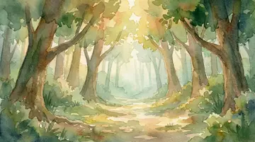

Nature Seed Gumuhit ng landas. Pagsamahin sila.
Isang libreng physics puzzle na nilulutas sa pagguhit ng linya, puwedeng laruin sa iyong browser. Gumuhit ng linya gamit ang limitadong tinta at magiging rampa, tulay o sasalo ito na magdadala kay Water Drop papunta kay Seed. Bawat nalutas na level ay nagpapanumbalik ng eksena ng gubat na watercolor.
Inilabas noong Setyembre 18, 2026 na may 100 level, mga bituin ng kahusayan sa linya at naka-save na progreso. Libre ito sa itch.io, Game Jolt at indiexpo; ang bersyon para sa iOS at Android ang target at wala pa sa mga app store.
Gumuhitgumuhit gamit ang limitadong tinta
Kumonektadalhin ang Water Drop sa Seed
Bloomibalik ang gubat
Sa loob ng kasalukuyang build
Ang iginuguhit mo ay nagiging bahagi ng level.
Bawat guhit na ilalagay mo ay nagiging matigas na bagay na may totoong banggaan, at tumutugon dito sina Water Drop at Seed. Parehong limitado ang tinta at bilang ng linya, kaya mahalaga ang hugis ng linya.
Katayuan ng paglabas Inilabas noong Setyembre 18, 2026

Pangkalahatang-ideya ng laro
Isang nakakarelaks na puzzle sa pagguhit tungkol sa pagpapagtagpo ng dalawang munting karakter.
Ang ideya
Gumuhit ng landas, pagtagpuin sina Water Drop at Seed at panoorin ang tahimik na sketch na muling mabuhay.
Ilunsad ang build
100 level na puwedeng laruin na may pagguhit sa pamamagitan ng pagpindot, mga bituin para sa kahusayan ng linya at progresong naka-save sa pagitan ng mga session.
Madla
Mga manlalarong mahilig sa kalmadong puzzle, magaan na physics, temang kalikasan at hindi nakaka-stress na mobile session.
Katayuan
Inilabas noong Setyembre 18, 2026 at libreng laruin sa iyong browser. Ang mobile na bersyon ang target; wala pa ito sa mga app store.
Mga Tampok
Ang ginagawa mo sa Nature Seed.
Mga pisikal na landas na iginuguhit para lutasin ang puzzle
Nagsisimula ang bawat puzzle sa lupain, kay Seed at kay Water Drop. Ang guhit ng manlalaro ang nagiging rampa, tulay o sasalo na nag-uugnay sa kanila.
Malinaw na feedback ng physics
Gumagalaw sina Water Drop at Seed sa paraang masusundan mo, kaya ipinapakita ng bigong subok kung ano ang babaguhin.
Mga reward sa pagpapanumbalik ng kagubatan
Tapusin ang isang level at mapupuno ng kulay at lumalaking mga puno ang iginuhit na eksena.
Maiikling level, pagguhit sa pamamagitan ng pagpindot
Maiikli ang mga level at gumuguhit ka sa pamamagitan ng pagpindot, na bagay sa mabilisang session sa telepono.
Gameplay loop
Paano maglaro ng Nature Seed
- Hakbang 01Basahin ang sketch
Hanapin ang mga dalisdis, puwang at harang, at ang pinakaligtas na paraan para pag-ugnayin ang dalawang karakter.
- Hakbang 02Gumuhit ng linya
Iguhit ang iyong linya. Ang guhit ay nagiging rampa, gabay o sasalo para sa mga karakter.
- Hakbang 03Kumpirmahin at obserbahan
Ilagay na ang linya at panoorin ang reaksyon ng mga karakter. Makikita mo kung ano ang gumana at ano ang hindi.
- Hakbang 04Mamukadkad o pinuhin
Kapag nakarating si Water Drop kay Seed, babalik ang gubat. Kung hindi, gumuhit ulit gamit ang natutuhan mo.
Kwento / mundo
Isang gubat na iginuhit sa sketch ang naghihintay ng tubig.
Nagsimula ang Nature Seed bilang physics puzzle sa pagguhit ng linya tungkol sa pagpapanumbalik ng isang marupok na bagay, hindi sa pagtutulak ng mga bagay para magsama.
Ang mga tauhan ay sina Seed, Water Drop at isang gubat na bumabalik mula sa sketch tungo sa kulay habang naglalaro ka. Bawat puzzle ay isang maliit na gawain: pag-aralan ang lupa, gumuhit ng landas at tulungan ang tubig na makarating sa isang bagay na puwedeng lumago.
- Direksyon ng disenyo
- Kalmadong pisika at nakikitang pagpapanumbalik
- Mga karakter
- Water Drop at Seed
- Pakikipag-ugnayan
- Pagguhit sa pamamagitan ng pagpindot
- Gantimpala ng mastery
- Nakakakuha ng tatlong bituin ang paglutas gamit ang iisang linya
Sa isang tingin
Libre sa browser ngayon, na ang mobile ang tinatarget.
May limitado kang tinta at limitadong bilang ng linya. Gamitin ang mga ito para dalhin si Water Drop kay Seed, pagkatapos ay ulitin ang level at paikliin ang solusyon sa isang linya para sa tatlong bituin.
- Genre
- Physics puzzle sa pagguhit ng linya
- Target ng platform
- iOS / Android
- Hugis ng session
- Maiikling kalmadong level
Mag-download ng mga asset
Mga asset ng Nature Seed para sa press at creator
Mga WebP preview para sa saklaw ng press, pagsusuri ng publisher at sanggunian sa pahina ng store. Available kapag hiniling ang mga source file na full-resolution.
Brand at mga character
 Water DropAng asul na karakter na kailangang makarating kay Seed.
Water DropAng asul na karakter na kailangang makarating kay Seed.
 Seed characterAng berdeng karakter na sinusubukang abutin ni Water Drop.
Seed characterAng berdeng karakter na sinusubukang abutin ni Water Drop.
 Paglago ng punoAng punong lumalaki pagkatapos malutas.
Paglago ng punoAng punong lumalaki pagkatapos malutas.
 Menu ng gubatBackground ng pangunahing menu.
Menu ng gubatBackground ng pangunahing menu.
 Background ng gameplayBackground ng level na may walang laman na play area.
Background ng gameplayBackground ng level na may walang laman na play area.
Mga sketch level na draw-to-solve
 Sketch level 01Sketch bago malutas.
Sketch level 01Sketch bago malutas.
 Sketch level 02Sketch bago malutas.
Sketch level 02Sketch bago malutas.
 Sketch level 03Sketch bago malutas.
Sketch level 03Sketch bago malutas.
 Sketch level 04Sketch bago malutas.
Sketch level 04Sketch bago malutas.
 Sketch level 05Sketch bago malutas.
Sketch level 05Sketch bago malutas.
 Sketch level 06Sketch bago malutas.
Sketch level 06Sketch bago malutas.
 Sketch level 07Sketch bago malutas.
Sketch level 07Sketch bago malutas.
 Sketch level 08Sketch bago malutas.
Sketch level 08Sketch bago malutas.
 Sketch level 09Sketch bago malutas.
Sketch level 09Sketch bago malutas.
 Sketch level 10Sketch bago malutas.
Sketch level 10Sketch bago malutas.
Mga napanumbalik na eksena ng puzzle
 Napanumbalik na level 01Naibalik pagkatapos malutas.
Napanumbalik na level 01Naibalik pagkatapos malutas.
 Napanumbalik na level 02Naibalik pagkatapos malutas.
Napanumbalik na level 02Naibalik pagkatapos malutas.


Napanumbalik na level 03Naibalik pagkatapos malutas. Napanumbalik na level 04Naibalik pagkatapos malutas.
Napanumbalik na level 04Naibalik pagkatapos malutas.
 Napanumbalik na level 05Naibalik pagkatapos malutas.
Napanumbalik na level 05Naibalik pagkatapos malutas.
 Napanumbalik na level 06Naibalik pagkatapos malutas.
Napanumbalik na level 06Naibalik pagkatapos malutas.
 Napanumbalik na level 07Naibalik pagkatapos malutas.
Napanumbalik na level 07Naibalik pagkatapos malutas.
 Napanumbalik na level 08Naibalik pagkatapos malutas.
Napanumbalik na level 08Naibalik pagkatapos malutas.
 Napanumbalik na level 09Naibalik pagkatapos malutas.
Napanumbalik na level 09Naibalik pagkatapos malutas.
 Napanumbalik na level 10Naibalik pagkatapos malutas.
Napanumbalik na level 10Naibalik pagkatapos malutas.
Timeline ng pagbuo
Timeline ng pagbuo ng Nature Seed
- Tag-init 2025Orihinal na konsepto
Nagsimula ang Nature Seed bilang ideya para sa isang tahimik na mobile puzzle tungkol sa koneksyon at pagpapanumbalik ng kalikasan.
- Oktubre 2025Pagkakakilanlan ng Seed at Water Drop
Natapos namin ang design document at napagpasyahan sina Seed at Water Drop bilang mga pangunahing karakter.
- Disyembre 2025Nagsisimula ang pag-unlad
Pinlano namin ang mga unang level sa papel, saka nagsimulang bumuo, at naging puwedeng laruin ang mga pangunahing sistema.
- Pebrero 2026Malaking round ng draft level
Ang malaking magaspang na unang pasada sa mga level ang nagbigay sa amin ng pundasyon para sa mas pinong ayos at balansing sa dakong huli.
- Marso-Abril 2026Mechanics at level review
Sinuri namin ang mga dagdag na mekanika at draft na level, saka pinasimple o inayos muli ang mga ito para manatiling kalmado ang laro.
- Hulyo 2026Round ng vertical prototype
Pinagsama ng build noong Hulyo ang pagguhit gamit ang limitadong tinta, mga bituin ng kahusayan, naka-save na progreso at matatag na pagbuo ng linya sa iisang puwedeng laruing loop.
- Setyembre 18, 2026Paglabas ng Nature Seed
Inilabas ang laro bilang Nature Seed na may 100 level, mga bituin ng kahusayan sa linya, naka-save na progreso at mga eksena ng pagpapanumbalik sa watercolor.
FAQ ng Nature Seed
Mga karaniwang tanong tungkol sa Nature Seed
Libre ba ang Nature Seed?
Oo. Puwede mo itong laruin nang libre sa iyong browser sa itch.io, Game Jolt at indiexpo.
Inilabas na ba ang Nature Seed?
Oo. Inilabas ito noong Setyembre 18, 2026 na may 100 level. Ang bersyon para sa iOS at Android ang target na platform at wala pa sa mga app store.
Anong uri ng laro ang Nature Seed?
Isang nakakarelaks na physics puzzle sa pagguhit ng linya. Ang mga linyang iginuguhit mo ay nagiging matitigas na bagay na tumutulong kina Water Drop at Seed na magkita.
Paano nilalaro ang Nature Seed?
Basahin ang lupain, gumuhit ng ruta gamit ang limitadong tinta, at panoorin ang reaksyon ng dalawang karakter. Kung pumalya, gumuhit ulit. Mas kaunting linya, mas maraming bituin, at ang isang linya ay may tatlo.
Sino ang gumagawa ng Nature Seed?
WillowinWorlds, isang independiyenteng studio na gumagawa ng mga mobile puzzle at arcade na laro.
Puwede ko bang gamitin ang mga press asset ng Nature Seed?
Oo, para sa press, pagsusuri ng publisher at mga sanggunian sa store. Nananatiling pribado ang mga source file maliban kung hihilingin mo ang mga ito sa amin.
Nature Seed Devlog
Ano ang nagbago at kailan
- Paglabas ng Nature Seed
Inilunsad ang Nature Seed sa pinal nitong pamagat bilang libreng laro sa browser sa itch.io, Game Jolt at indiexpo, na may 100 level, mga bituin ng kahusayan sa linya at naka-save na progreso.
- Pagpapanumbalik ng Level 2 at pagpapahusay ng katatagan
Gumagamit na ngayon ang Level 2 ng pares ng production background nito, na may mas maaasahang setup ng level, pagsusuri ng banggaan at feedback sa pagtatapos.
- Hulyo 2026Build na puwedeng laruin
Pinagsama ng build noong Hulyo ang pagguhit ng linya gamit ang limitadong tinta, mga bituin ng kahusayan, naka-save na progreso at feedback sa pagpapanumbalik.
- Abril 2026Round ng pag-rework ng level
Pagkatapos ng internal na pagsusuri, inayos muli namin ang ilang draft na level para bawasan ang kumplikasyon at mas madaling mabasa sa telepono.
- Marso 2026Pagsusuri ng mekanika
Sinubukan namin ang mga dagdag na mekanika at inalis ang mga nagpaparamdam na siksikan ang mga level.
- Pebrero 2026Malaking round ng draft level
Ang malaking magaspang na unang pasada sa mga level ang naging pundasyon para sa mas pinong ayos at balansing sa dakong huli.
- Disyembre 2025Nagsisimula ang pag-unlad
Ang mga pangunahing sistema ay nailipat mula sa design document tungo sa anyong puwedeng laruin.
- Tag-init 2025Orihinal na konsepto
Ang unang bersyon ng Nature Seed ay isang ideya ng tahimik na puzzle tungkol sa koneksyon at pagpapanumbalik ng kalikasan.